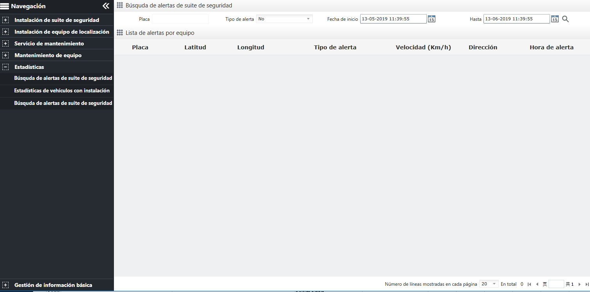

Búsqueda de la alarma de dispositivo
Haga clic en el botón en la barra del menú de navegación para ingresar a la página “Búsquda de alertas de suite de seguridad”, como se muestra a continuación.

Fig 112 Consultar la alarma de dispositivo
Ingrese “Placa”, “Tipo de alerta”, “Fecha de inicio”, “Hasta”, haga clic en el botón 〖 〗, todas las alarmas que cumplen con las condiciones de consulta se muestran en la lista de alarmas del dispositivo.
〗, todas las alarmas que cumplen con las condiciones de consulta se muestran en la lista de alarmas del dispositivo.